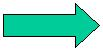
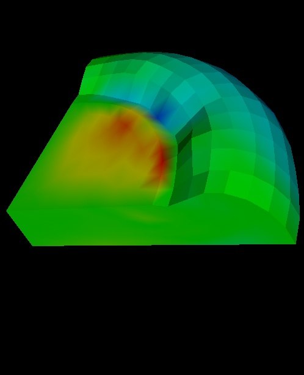
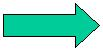
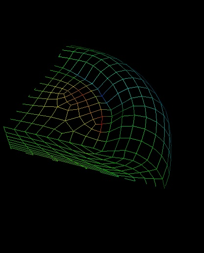

Point: 246
Coordinates: (0.934369, 0.933416, -0.110627)
Value: -12.3971
Point: 159
Coordinates: (1.18519, 0.284014, -0.0658806)
Value: -7.75321

|  | While holding the left mouse button down, the user
can rotate a body in the x, y, or z direction by moving the mouse
in any direction.
 |
|
|
While holding the center mouse button down, the user can pan the camera in the x and y direction by moving the mouse in either direction. | |
|
While holding the right mouse button down, the user can zoom in with the camera by moving the mouse up and zoom out by moving the mouse down. | |
|
Use the mouse to pick a node, and press 'p' on the keyboard
to display the id, the x,y,z coordinates and the current scalar value of
the node. A small marker sphere is displayed on the body to show
which node was picked. Here is an example output:
Point: 246
Point: 159
|
|
|
Press 'w' on the keyboard, to display the body as a wireframe. Press 's' on the keyboard to display the body as a solid surface. |  |